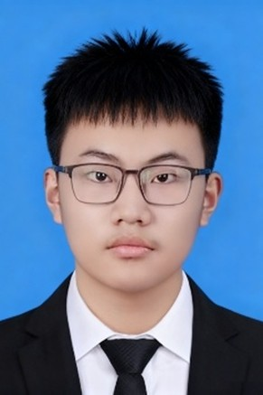

天津科技大学·尚行学部（教育部学科专业设置调整优化机制改革试点单位）·智能科学与先进制造实验班（人工智能方向）
我是天津科技大学 2023 级智能科学与先进制造实验班（人工智能方向）本科生，在本科阶段我系统修读了 《自然语言处理》《数字图像处理》《算法设计与分析》等人工智能与计算机学科核心课程， 构建了扎实的理论基础与知识体系；同时自主学习了吴恩达、李沐、李宏毅等人的机器学习与深度学习系列课程， 对人工智能领域的前沿方向与核心方法形成了全面且深入的认知。
我熟练掌握 Python、C++、Java 等编程语言，能够独立运用 PyTorch、TensorFlow 等主流深度学习框架 开展模型开发与实验；可借助 Endnote、LaTeX 等工具完成学术论文的规范撰写，目前已有 1 篇第一作者论文 处于 CCF-C 类会议投稿阶段。累计获得包括第十九届"挑战杯"全国大学生课外学术科技作品竞赛 国家级三等奖、中国大学生工程实践与创新能力大赛国家级一等奖在内的国家级奖项 5 项， 省部级奖项 10 余项，具备扎实的数理基础与工程实践能力。已通过大学英语六级考试， 具备良好的英文文献阅读与学术写作能力。
挑战杯 国家级三等奖
CCF-C 会议论文（在投）